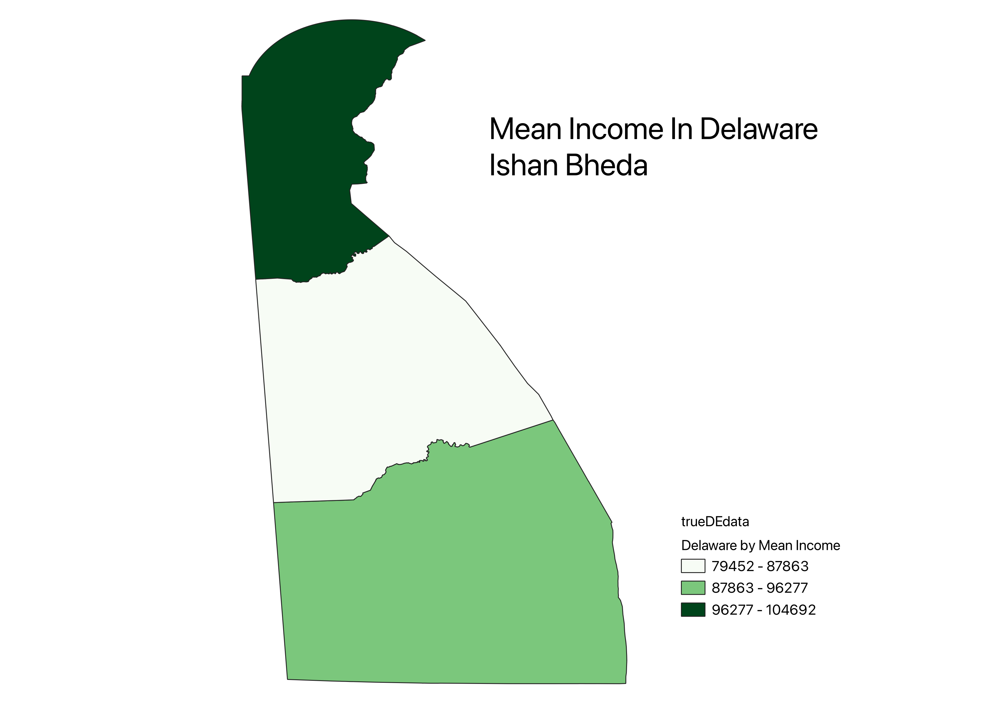

Homework 6: Census data choropleth
Ishan Bheda
This map shows the mean income within the different counties of Delaware. Despite having few counties and area, they do vary based on income. It can also show how wealthy the state is as a whole as the lowest mean is still high compared to U.S. averages

Data used for this project
CSV dataset
Link to shapefile